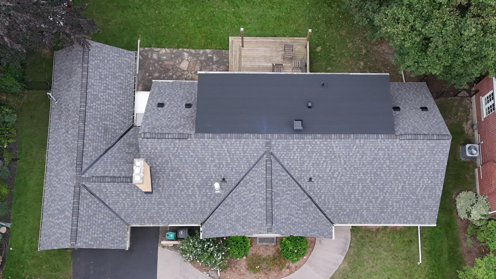
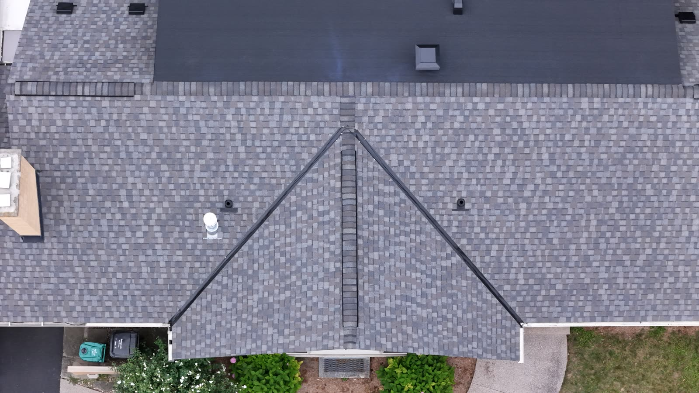
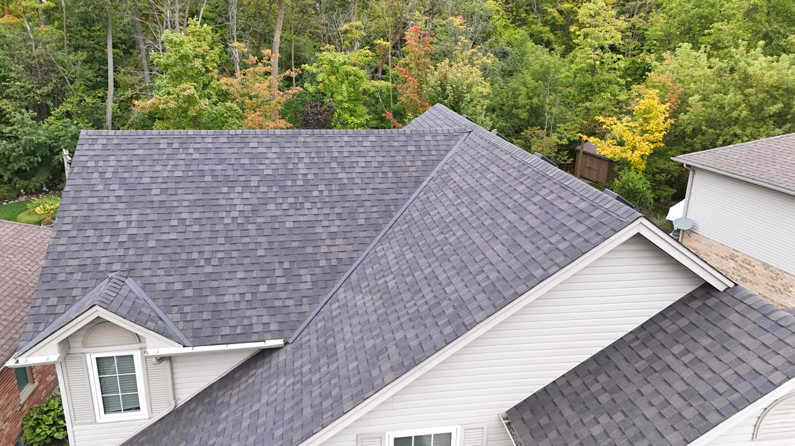
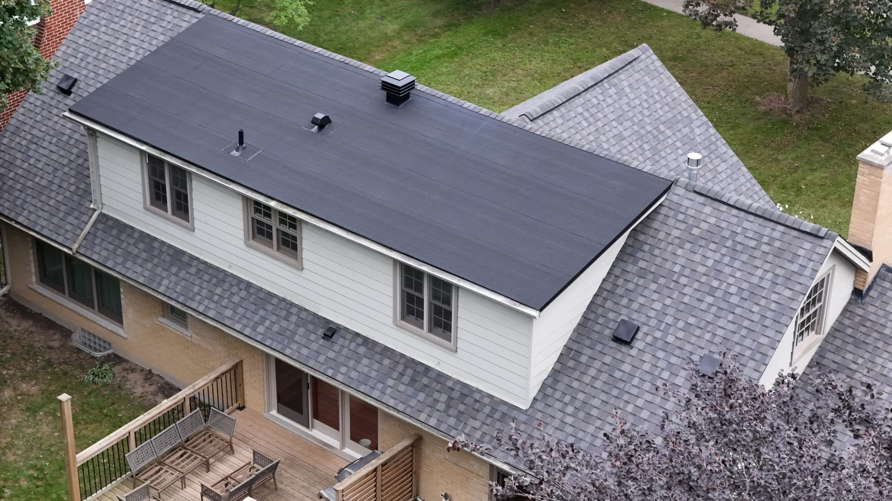

Colour: Max Def DriftwoodFrom the driveway you see one side of a roof. From up here you see all of it, and a few things about how it was built that the ground never shows you.

34 m up · camera 78° downLooked at from directly above, a roof turns into a map. On this one the front slope runs down to the gutter, the gable's two slopes run outward, and both end up in the dark lines between them. Those are the valleys.
A valley carries the water of two slopes at once, and all of it reaches the gutter at a single corner. That's why a valley gets more care than any other line on a roof. These are open valleys: the shingles stop short on both sides, so the water runs down a clear channel of its own.

12 m up · camera 18° downShingles are nailed to the plywood deck, and they follow it. If a sheet underneath dips, or a rafter has sagged, the rows of shingle bend with it. From the ground you'd never see it. From up here, a bend jumps out.
The gold lines run along three rows on this slope, end to end. The shingles stay on them the whole way across.

Flat · membrane Sloped · shingles 20 m up · camera 29° downFrom the ground you'd call this a shingled roof. From above, the whole top of the back dormer is flat, and shingles can't do that job. They work by overlapping, each row shedding water onto the one below it, so they need a slope to work at all.
Where the roof goes flat, the shingles stop and a sealed membrane takes over. The line where the two meet is the detail that matters most on a roof like this, because it's where two different systems have to hand the water over without a gap.
Free, written, measured — and photographed as we go. Serving Kitchener, Waterloo, Cambridge, Elmira, Guelph, and surrounding areas.